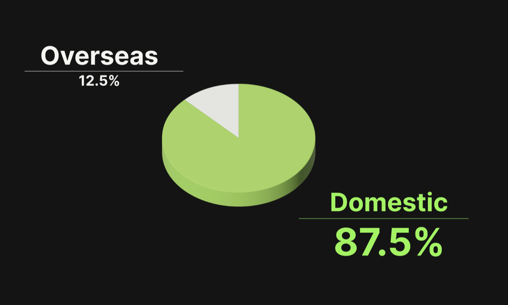
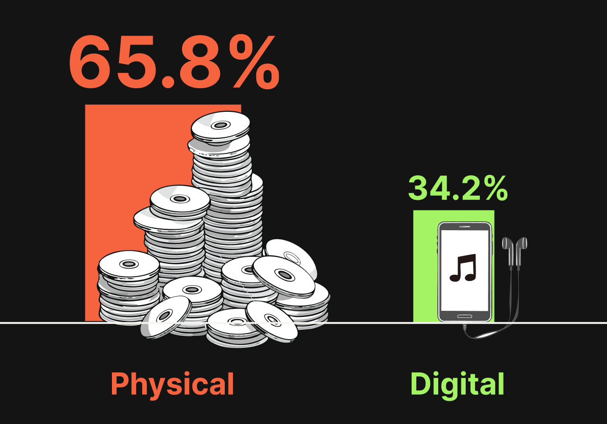
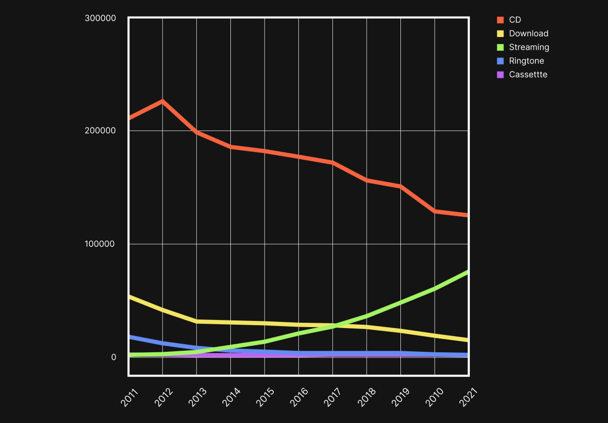

1 日本人は、まず国内の音楽を消費する
Japanese people consume domestic music first
2 日本では、CD売上の収入が昔から多い
High income from CD sales
音楽ソフト生産・配信金額売上
Music software production and distribution sales
3 アイドルのCD売り上げが多い
The sales of idol CD are high
では、実際に日本の音楽市場を世界と比較すると どのような違いが見られるのだろうか？
How does the music market in Japan differ from the global music market?
日本のアイドル文化は音楽市場に どのような影響を与えているのだろうか？
How does the culture of Japan's idol impact the music market in Japan?